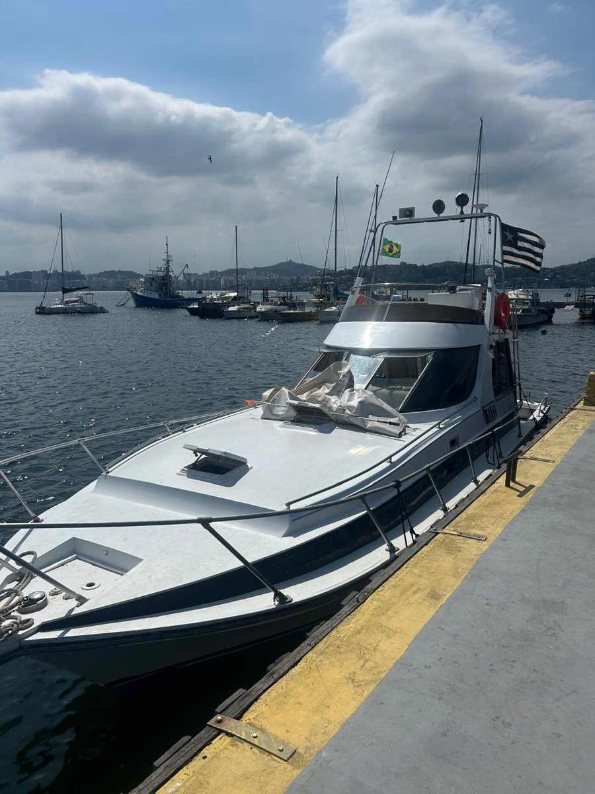
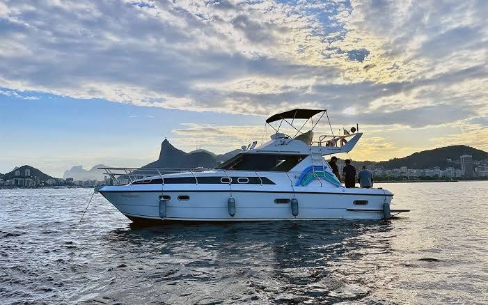

Diário de bordo · nº 36
VIVA LA VIDA
lancha El Soñador
Embarcaçãolancha 36 pés
Tripulaçãocapitão + marinheiro
ÁreaBaía de Guanabara
Duração5 horas
porto deJurujubaNiterói
Registro de viagem · folha 1
Saída
0h00Embarque em Jurujuba. Turma a bordo, coolers no lugar, coletes conferidos.
0h10Soltamos as amarras. Som ligado.

P.S. Saindo do Rio? Embarque na Urca.
passagemPão de AçúcarRio
folha 2
Travessia
0h40Cruzamos a entrada da baía. Pão de Açúcar de frente.
1h00Parada na Praia Vermelha (ou Urca). Todo mundo no flybridge tirando foto.

âncoraPonta do MorcegoNiterói
folha 3
Parada
1h45Âncora na Ponta do Morcego. Tapete flutuante na água.
2h15Ninguém quer sair do flutuante.

2h45Brasa acesa na popa. Kit churrasco é por conta da casa.

3h15Pedimos o cardápio de drinks. (à parte, mas valeu)
folha 4
Volta
4h30Rumo a Jurujuba com o céu mudando de cor.
5h00Atracados. Popa acesa de azul. Já querendo voltar.

viagemconcluída5 horas
Anotações do capitão
Já vem no pacote
- 1 capitão e 1 marinheiro
- kit churrasco
- 5 horas de passeio
- tapete flutuante nas paradas
- drinks opcional, à parte
Próximas viagens
ilhasTijucas, Cagarras, Rasa, Redonda, Maricás, Itaipu a combinar
praiasItaipu, Piratininga, Forte do Rio Branco, Imbuí a combinar
A próxima folha deste diário pode ser a sua. Reserve pelo WhatsApp.
El Capitán
assinatura do capitão · WhatsApp (00) 00000-0000